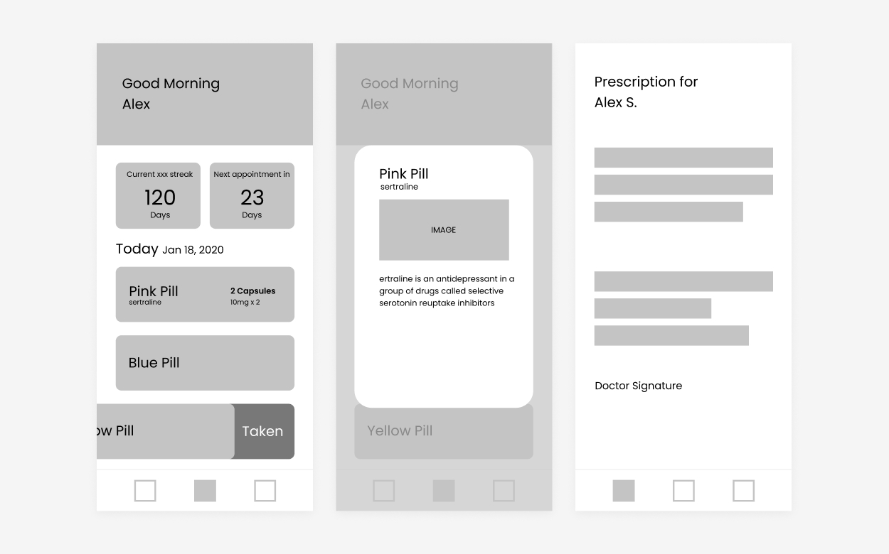
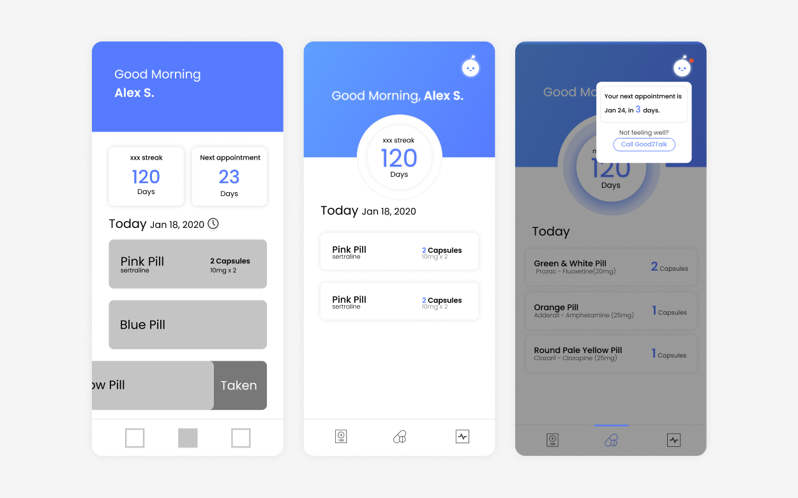
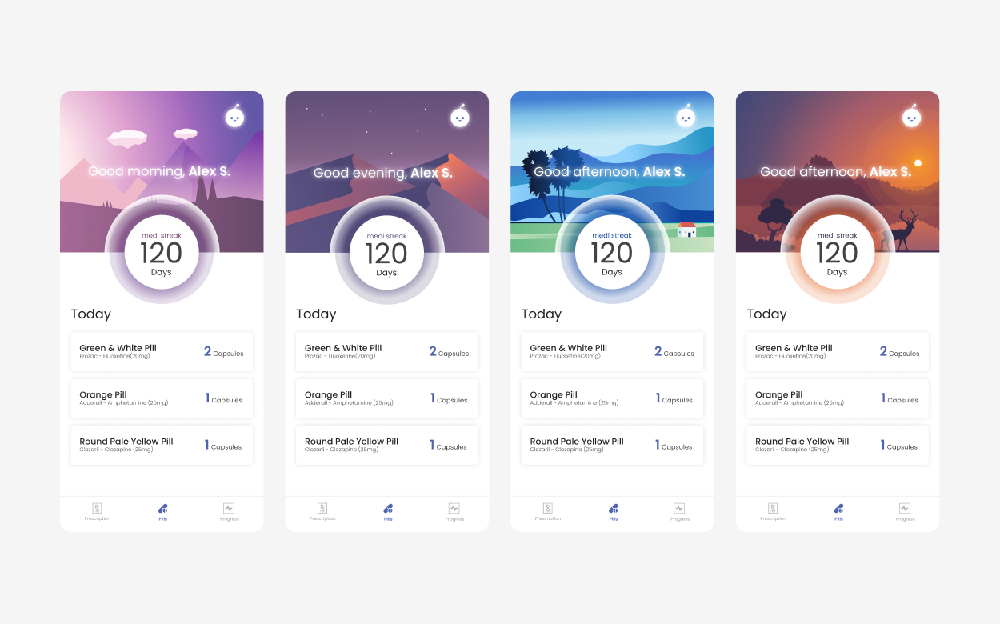

The Canadian Mental Health Association is the champion for mental health. They facilitate access to resources people require to maintain and improve mental health and community integration, build resilience, and support recovery from mental illness. What can you do to emphasize the importance of mental health and help individuals acquire the help they need?
How can we encourage such individuals to reach out addictions and mental health systems to get the help they need?
How do we know if they are taking the medication as prescribed or if there are side effects with the medication? How might that be impacting their mental health and overall wellness?
1 in 5 Canadians experiences a mental illness or addiction problem
1 in 3 of those individuals will reach out for help
1 in 2 of these individuals will terminate their treatment early
For an individual suffering from a mental health disorder, the journey towards successfully completing treatment is a long and arduous one. It often requires many adjustments to medication type and dosage with many visits to the doctor’s in between for re-assessments and check-ins. At times, the process can feel futile when the medication has negative side-effects, or adverse results and, relaying the message to the doctor through an appointment can be expensive and time consuming.
We started by writing down all our ideas. And then have each member vote for the top 3 functions we should keep.
Earlier this year, my friend Veronica visited me from Toronto. I found out that she has been suffered from depression when she told me she forgot to bring her medication.
We went to Shoppers Drug Mart to see if they have her prescription in the system. After a 30 minutes wait of the lady calling a few different Shoppers locations in Toronto. We were told that there was no record being found.
I suggested the team we should have a prescription function in our app which makes it easier for the patient in case similiar occasion happens
Veronica told me that anti-depression treatment tends to be a long process.(She had been taking it since a year ago) Therefore, patients tend to only take it once a day with their prefered time.
After interviewing Veronica, we decided to have the reminder by each type of pills instead of the time in which the patient should take.
I have then created the wireframes.
I initially wanted to have a block that reminds the user the appointment date(left version).
After doing more research, I figured it might create pressure to the user.
Instead a notification button was created which only notify the user when the appointment date is near.
Medi-Minder is a mobile application that keeps user-digestible information on each medication prescribed to the user to allow the user to be aware of what effects the medication should be and what possible side-effects are. This allows the user to be more alert to their response to the medication. Medi-Minder, also, tracks whether the user has taken their medications within their prescribed cycle, and sets a streak for days that pills have been taken!
I realized the importance of user research and getting feedback from different people. It is easy for us to make assumptions about people with mental illness, but what they are experiencing can be completely different. I was also grateful that my friend was willing to answer all my questions.
After the Hackathon, Minh To suggested it would be cool to have the background changes depends on the time of the day to make the app more interactive. I created the these interfaces in Adobe Illustartor after the hackathon.
Medi-Minder will have a database in order to ensure data persistence, as well as profiles for healthcare professionals and users. Additional next steps for Medi-Minder would be to increase its functionality to include virtual prescriptions to allow patients to carry it with them in case of emergencies and to be able to host virtual appointments to connect patients who may have difficulty physically visiting their health-care professional.